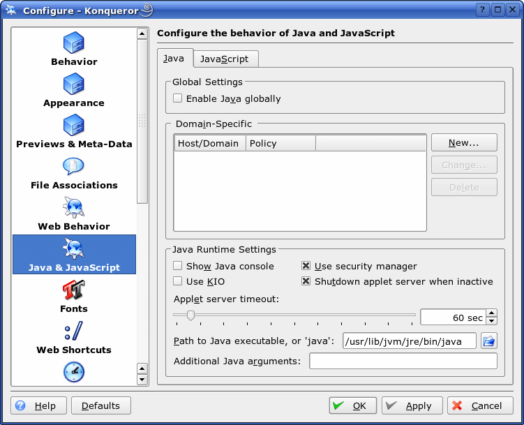
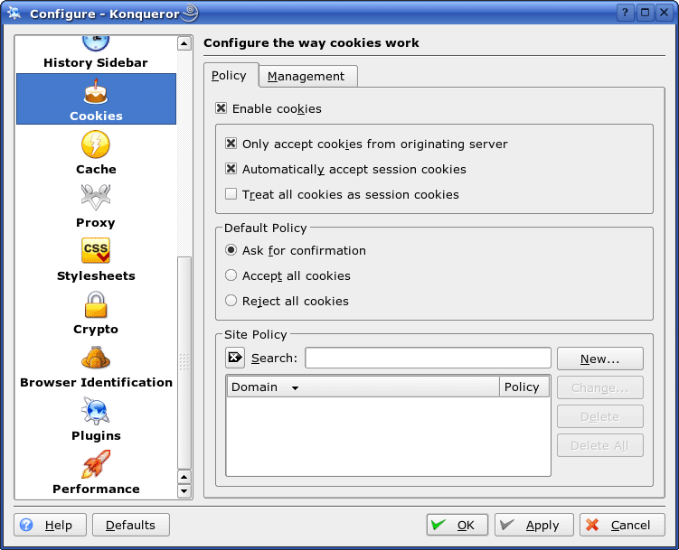

Avoid data trails on the internet: Konqueror
Choose Setting and then Configure Konqueror in the menu. This window will appear:

Choose entry Java & JavaScript. Deactivate Enable Java globally. Switch to tab JavaScript to deactivate Enable JavaScript globally.
Choose entry Cookies. Verify the settings shown here:

The following items should be activated:
- Enable cookies
- Only accept cookies from originating server
- Automatically accept session cookies
- Default Policy: Ask for confirmation.
It is, in addition, recommended to disable plugins which can be done in entry Plugins.
Extension: For all mentioned settings you may set domain-specific exceptions. In that way, you can configure Konqueror to accept cookies or interpret JavaScript for certain trustworthy sites.
Test: Test these settings for anonymity using this guide.
Note: These are basic settings. Using a filter proxy will offer more options for blocking content.